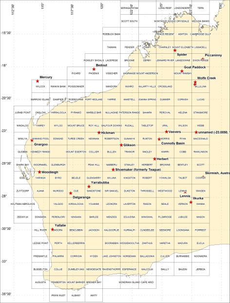

Western Australia is well placed to preserve meteorite impact events because of its stable geological history over many millions of years.
This stability has meant that impacts that occurred 1 to 2 billion years ago are still preserved in the geological record. Impact fall-out (ejecta layers) are also present in rocks of 2 to 3 billion years of age.
These pages have been divided up into links to the various impact structures shown on the map below showing their locations. Locations derived from the Earth Impact Database.
I have compiled a variety of data from public sources including published technical papers, geoscientific data (geology and geophysics) and produced maps summarising some of this data where appropriate. I have referenced all data sources, but if I have missed any please let me know so I can correct this.
Impact Sites of Western Australia
Glikson
Gnargoo
Goat Paddock
Ilkurka
Lennis
Neereno Hill Possible Impact Structure
Piccaninny
Skirmish
Spider
Veveers
Woodliegh